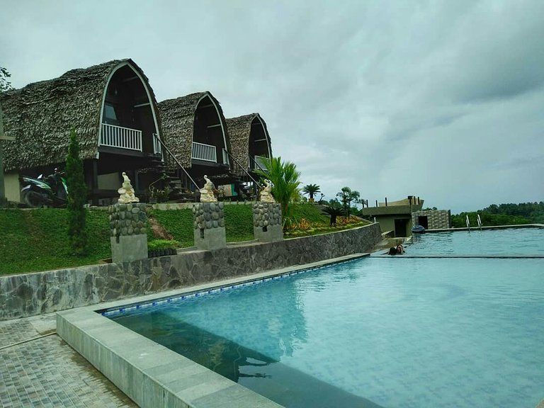
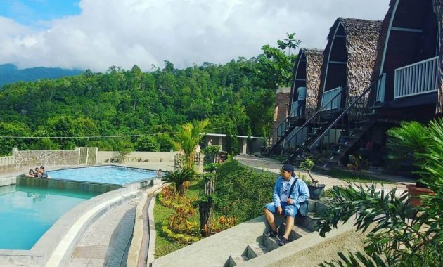
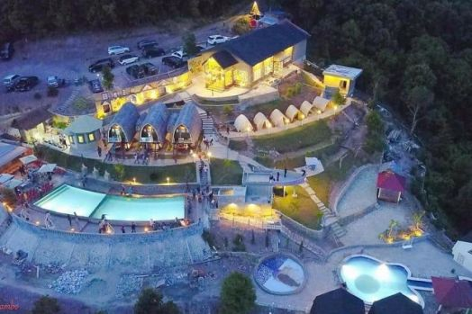

WISATA PALOPO
Bukit Kambo, Tempat Wisata Ngehits Di Kota Palopo
Jika sedang pergi ke Kota Palopo jangan lupa singgah di Bukit Kambo. Sebuah tempat wisata ngehits di Kota Palopo yang tidak pernah sepi pengunjung. Ini disebabkan pemandangan alam yang asri dan fasilitas wisata yang lengkap.
Bagi traveler yang belum mengetahui tentang tempat wisata Bukit Kambo, silakan simak artikel berikut. Di dalamnya berisi uraian tentang pesona Bukit Kambo secara lengkap dan jelas. Ini dia uraian-uraian yang dimaksud:
Pesona Wisata Bukit Kambo Palopo

Bukit Kambo adalah tempat wisata jenis water park yang baru berdiri di Palopo. Sebuah destinasi wisata taman air buatan yang didesain sangat cantik dan menarik. Maka dari itu, pihak pengelola yakin kalau Bukit Kambo akan menjadi wisata hits.
Yang menarik dari Bukit Kambo tidak hanya desain destinasi-nya saja. Pemandangan alam yang disuguhkan juga sangat indah dan instagramable. Apalagi tempat wisata yang juga disebut Kambo Highland Park Palopo ini berlatar pegunungan.
Selain udara yang bersih dan angin yang sejuk, pengunjung juga bisa melihat kota Palopo dari Ketinggian. Tentu suasana ini begitu mengasyikkan apalagi jika traveler menikmatinya sembari berenang di kolam-kolam yang berair jernih dan dingin.
- Berenang di Kolam Berlatar Pegunungan Destinasi pertama adalah berenang di kolam berlatar pegunungan. Ini merupakan aktivitas wisata inti di Bukit Kambo. Pasalnya, tempat wisata ini dibangun untuk memanja traveler yang menyukai wisata jenis water park.
- Melihat Sunrise dan Sunsite Dari Balik Bukit Destinasi Bukit Kambo berikutnya ialah pengunjung bisa melihat sunrise dan sunsite dari balik bukit. Ini juga pesona wisata yang tidak boleh diremehkan dan ditinggalkan. Apalagi jika melihatnya sambil berenang di air yang sejuk.
- Mengabadikan Kota Palopo dari Ketinggian Posisi Bukit Kambo yang dibangun di atas bukit membuat traveler bisa melihat pemandangan Kota Palopo yang ada di bawahnya. Aktivitas ini juga disukai bahkan banyak traveler yang mengabadikannya menjadi foto selfie.
Destinasi Pelesir di Bukit Kambo
Fasilitas Wisata di Bukit Kambo

Untuk membantu traveler yang ingin berwisata di Bukit Kambo pihak pengelola sudah membangun beberapa fasilitas wisata. Di antaranya adalah kolam renang dari ukuran anak kecil hingga orang dewasa. Ini dia fasilitas yang lebih lengkap:
- Villa Tempat Menginap
- Spot-Spot Foto
- Warung-Warung untuk Wisata Kuliner
- Gazebo dan Bangku-Bangku di Atas Bukit
Jika traveler ingin menikmati Bukit Kambo di malam hari, maka bisa menyewa villa sebagai tempat menginap. Fasilitas ini juga tersedia sekalipun jumlah unitnya masih tidak terlalu banyak.
Pihak pengelola juga sudah membangun banyak spot foto di Bukit Kambo. Fasilitas ini bisa digunakan jika tidak ingin pulang tanpa kenang-kenangan wisata. Dijamin desainnya bagus dan sebagian besar berlatar bukit dan hutan.
Di Bukit Kambo juga sudah dibangun warung-warung untuk memanja lidah pengunjung. Makanan khas yang dijual tidak hanya enak tetapi harganya juga murah dan terjangkau. Atas dasar inilah, Bukit Kambo juga disebut wisata kuliner yang bagus.
Fasilitas Bukit Kambo yang berikutnya adalah gazebo dan bangku-bangku panjang yang dibangun di atas bukit. Dari sinilah pengunjung bisa melihat sunsite dan sunrise serta melihat Kota Palopo dari ketinggian.
Lokasi dan Rute Menuju Bukit Kambo
Bukit Kambo berada di Sulawesi Selatan tepatnya beralamat di Desa Kambo, Kecamatan Mungkajang, Kabupaten/Kota Palopo Sulsel. Lokasi yang cukup dekat dari Kota Palopo dan hanya membutuhkan durasi perjalanan selama 20 menit saja.
Untuk sampai ke Bukit Kambo silakan dilihat papan nama yang ada di pinggir jalan. Bisa juga dengan bertanya pada masyarakat sekitar atau menggunakan layanan GPS online. Pasti pengunjung sampai ke tempat wisata tersebut tanpa tersesat
Tiket Masuk Bukit Kambo
Untuk memasuki tempat wisata Bukit Kambo pengunjung harus membayar tiket seharga Rp35.000 per-orang. Sedangkan kalau mau menginap boleh menyewa villa dengan harga Rp750.000 per-malam.
Inilah penjelasan singkat tentang tempat wisata ngehits di Kota Palopo. Silakan datangi pada waktu senggang atau saat libur panjang. Dijamin pasti memuaskan dan tidak ingin cepat meninggalkan tempat wisata.